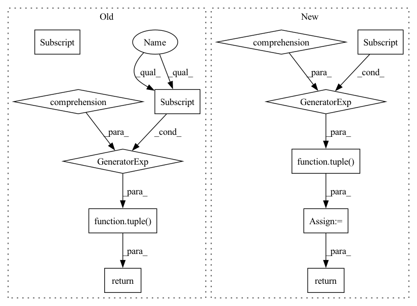

Pattern ID :10688
Before Change
if first_stage:
first_stage = False
self.memory_context.end_batch(b_ix)
return tuple(x[:len(batch_indices)] for x in args)
def __next__(self):
result = self.output_queue.get()
if result is None:After Change
args[f"result_{node_id}"] = result
pass
result = tuple(args[f"result_{x}"] for x in outputs)
return result
def __next__(self):
result = self.output_queue.get()In pattern: SUPERPATTERN
Frequency: 3
Non-data size: 12
Instances Fragment ID: 36895722
Project Name: libffcv/ffcv
Commit Name: f8baf227d1243d4207c082d8ea11b89b5a73da32
Time: 2022-02-08
Author: leclerc@mit.edu
File Name: ffcv/loader/epoch_iterator.py
M Class Name: EpochIterator
N Class Name: EpochIterator
M Method Name: run_pipeline(5)
N Method Name: run_pipeline(5)
M Parent Class: Thread
N Parent Class: Thread
M File Name: ffcv/loader/epoch_iterator.py
N File Name: ffcv/loader/epoch_iterator.py
M Start Line: 113
M End Line: 142
N Start Line: 111
N End Line: 140
Before Change
def decimate(b_out, ptr, decimation):
decimation_idx, decimation_ptr = get_decimation_idx(ptr, decimation)
b_out_decim = tuple(t [decimation_idx] for t in b_out)
return b_out_decim, decimation_ptr
class FPModule(torch.nn.Module):After Change
def decimate(tensors, ptr: Tensor, decimation_factor: int):
Decimate each element of the given tuple of tensors.
idx_decim, ptr_decim = decimation_indices(ptr, decimation_factor)
tensors_decim = tuple(tensor[idx_decim] for tensor in tensors)
return tensors_decim, ptr_decim
class FPModule(torch.nn.Module): Fragment ID: 36895723
Project Name: ignf/myria3d
Commit Name: 4fbe77c32a422b6494cf6f0bde5539d8250df9c5
Time: 2022-11-28
Author: 11660435+CharlesGaydon@users.noreply.github.com
File Name: myria3d/models/modules/pyg_randla_net.py
M Class Name: AnonimousClass
N Class Name: AnonimousClass
M Method Name: decimate(3)
N Method Name: decimate(3)
M Parent Class:
N Parent Class:
M File Name: myria3d/models/modules/pyg_randla_net.py
N File Name: myria3d/models/modules/pyg_randla_net.py
M Start Line: 235
M End Line: 238
N Start Line: 257
N End Line: 261
Before Change
if first_stage:
first_stage = False
self.memory_context.end_batch(b_ix)
return tuple(x [:len(batch_indices)] for x in args)
def __next__(self):
result = self.output_queue.get()
if result is None:After Change
for stage_code, define_outputs in code:
results = stage_code(**args)
for node_id, result in zip(define_outputs, results):
args[f"result_{node_id}"] = result
pass
result = tuple(args [f"result_{x}"] for x in outputs)
return result
def __next__(self):
result = self.output_queue.get() Fragment ID: 36895721
Project Name: libffcv/ffcv
Commit Name: f8baf227d1243d4207c082d8ea11b89b5a73da32
Time: 2022-02-08
Author: leclerc@mit.edu
File Name: ffcv/loader/epoch_iterator.py
M Class Name: EpochIterator
N Class Name: EpochIterator
M Method Name: run_pipeline(5)
N Method Name: run_pipeline(5)
M Parent Class: Thread
N Parent Class: Thread
M File Name: ffcv/loader/epoch_iterator.py
N File Name: ffcv/loader/epoch_iterator.py
M Start Line: 113
M End Line: 142
N Start Line: 111
N End Line: 140